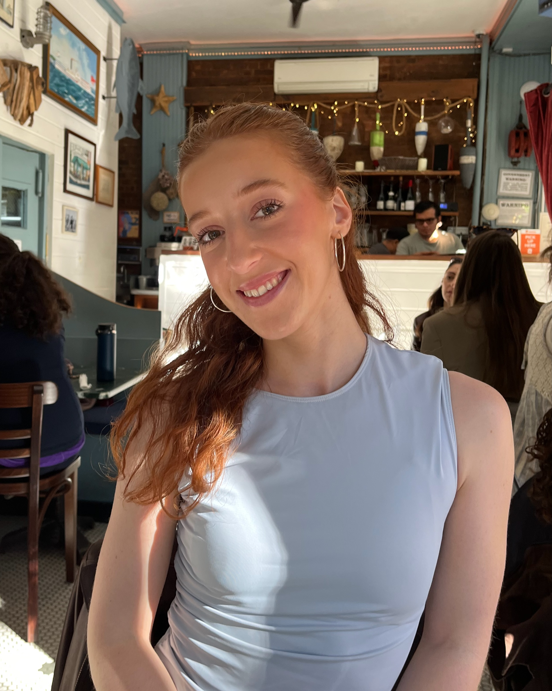
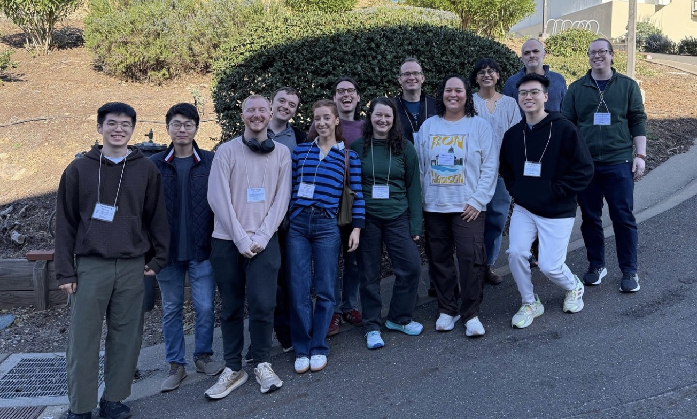

I am a 3rd year graduate student in the Department of Mathematics at Rice University, working with Alan Reid and Chris Leininger.
My research interests include low dimensional topology and hyperbolic geometry. Recently I've been thinking about foliations, laminations, knot compliments, and hyperbolic structures on 3 manifolds. Previously I attended Scripps College where I recieved a BA in Mathematics with a minor in Fine Art.
Email: wartman@rice

Email: wartman@rice
Office: Herman Brown Hall, Room 38